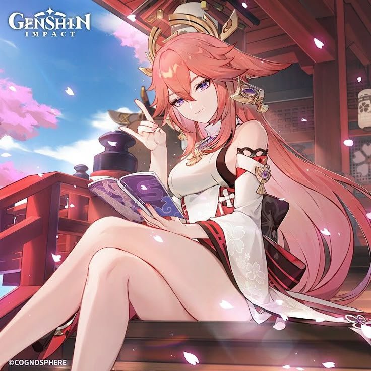

Genshin Cuties - Yae Miko
Yae Miko ˚₊‧꒰ა❤︎໒꒱ ‧₊
Yae Miko é uma personagem 5 estrelas do elemento electro. Ela é aquela personagem que mistura charme, mistério e uma boa dose de travessura. Como Sacerdotisa Suprema do Grande Santuário Narukami, ela tem um ar sofisticado, mas por trás disso, adora brincar com as pessoas e nunca perde a chance de dar uma resposta afiada. Além de ser super poderosa com seus ataques elétricos, ela também comanda a *Yae Publishing House*, mostrando que tem um lado bem esperto nos negócios. Com sua personalidade imprevisível e seu jeito provocador, Miko sempre deixa todo mundo na dúvida se está ajudando ou só se divertindo às custas dos outros.
